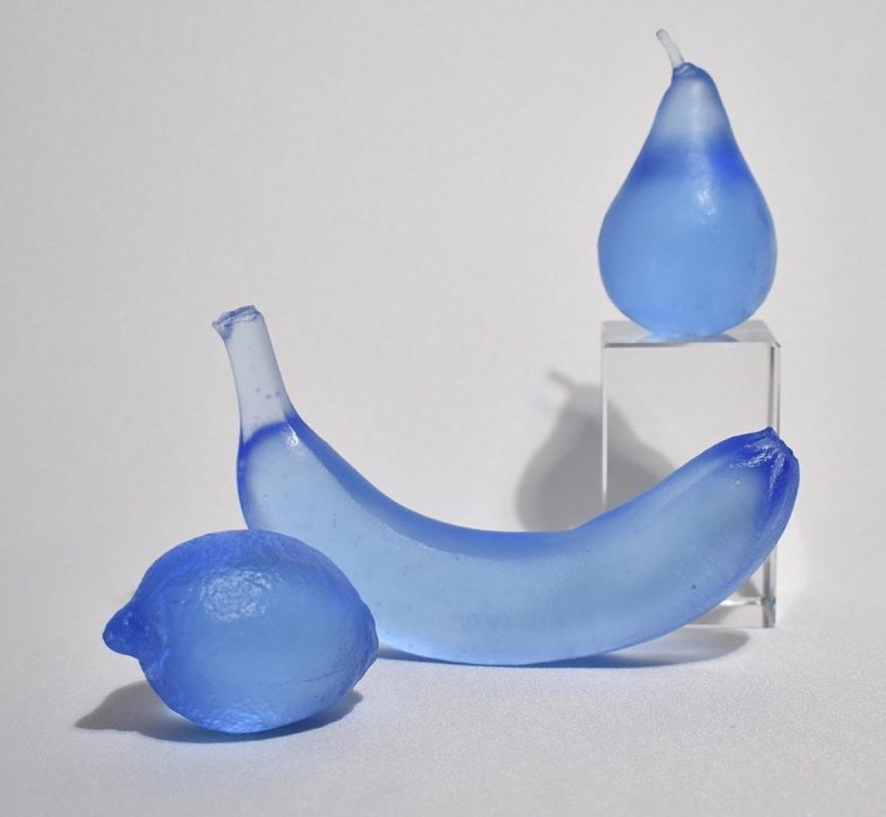

Conceptual photography employs photographic images as visual vehicles for exploring intellectual ideas and philosophical concepts rather than primarily pursuing aesthetic or documentary purposes. Conceptual photographers often create images where intellectual content dominates over visual beauty or technical mastery, demanding viewers engage primarily with ideas rather than visual experience. The medium permits photographers to investigate questions regarding representation, authenticity, identity, and the nature of photographic meaning. Contemporary conceptual photography demonstrates photography's capacity to function as serious medium for intellectual investigation and philosophical exploration alongside traditional documentary and aesthetic applications.
The Glass is Always Half Full With Devyn Ormsby

Previous articleAoi Yamaguchi Treats the Art of Calligraphy As Performance
Next articleRyan Heshka Seeks Out Visuals From Bygone Eras